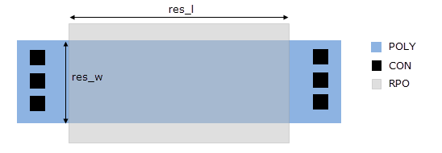

This example
checks the width, length, and length to width ratio rules for an
unsilicided resistor. Results, with attached properties, are only
output for resistors that fail at least one of the rules.
An unsilicided resistor must pass the following
checks:
Figure 1. Unsilicided Resistor
These checks can be coded using a conditional
expression combined with a non-persistent property that filters
out resistors that pass all of the checks. Non-persistent properties,
which are named “-”, “+”, or “+<name>”,
are not attached to the output layer. In this way, properties are attached
only to resistors that fail one or more of the checks.
Try It!
 |
Calibre Advanced DRC (eqDRC) Tutorial and Example Kit
Go to this page on Support Center
to download the complete eKit.
This example is in the device_routing_checks/unsilicided_res
example directory.
|
Procedure
- Derive the length and width
edges:
res_l = INSIDE EDGE POLY RPO
res_w = INSIDE EDGE RPO POLY
- Filter out resistors that
pass all of the checks.
bad_resistors = DFM PROPERTY RPO res_l res_w OVERLAP ABUT ALSO
[- = ((LENGTH(res_w)/2 < 0.4) ||
(LENGTH(res_l)/2 < 0.4) ||
(LENGTH(res_l)/LENGTH(res_w) < 1.0)) ? 1 : 0
] == 1
A conditional expression is
used to output geometries that fail one or more of the checks. The
conditional expression reads as follows: if the first, second, or
third condition is true, the DFM expression evaluates to 1, where
each condition defines a failing check. Otherwise, the DFM expression
evaluates to 0. Since the constraint on the DFM expression is “==
1”, the DFM Property operation outputs geometries on layer RPO that
fail one or more of the checks.
- Specify additional DFM expressions
that attach properties to the failing resistors. The following lines
can be appended to the DFM Property operation in Step 2:
[width = LENGTH(res_w)/2]
[length = LENGTH(res_l)/2]
[aspect = LENGTH(res_l)/LENGTH(res_w)]
Since the geometries have already
been filtered in Step 2, no constraints on the expressions are needed.
- Output the results with a
DFM RDB operation:
res_chk {
DFM RDB bad_resistors eqdrc.rdb CHECKNAME "%_l_"
CELL SPACE ALL CELLS
}